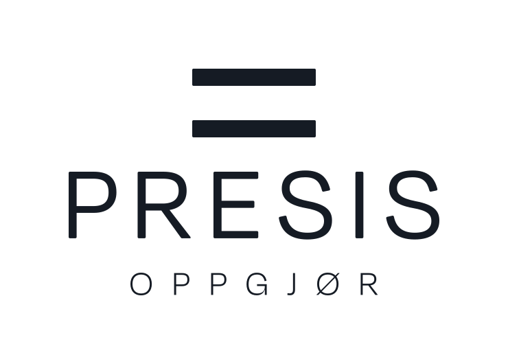
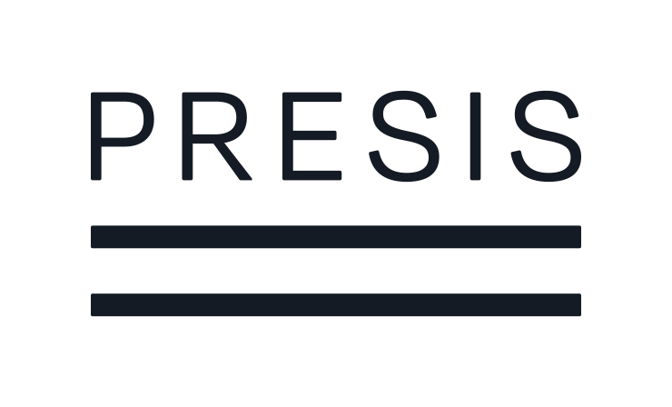
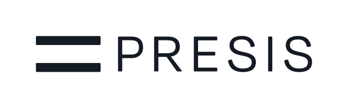
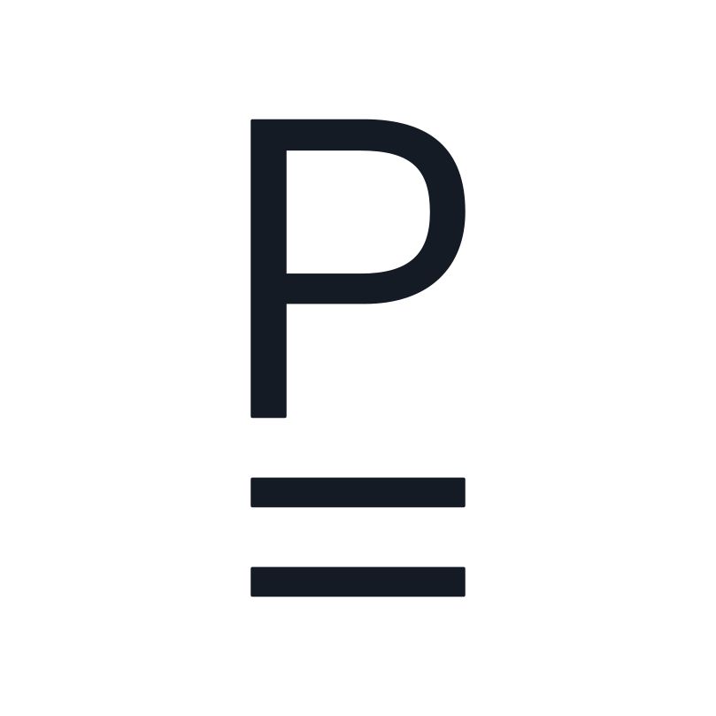
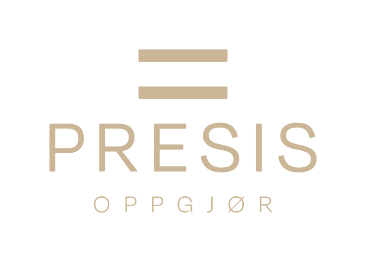
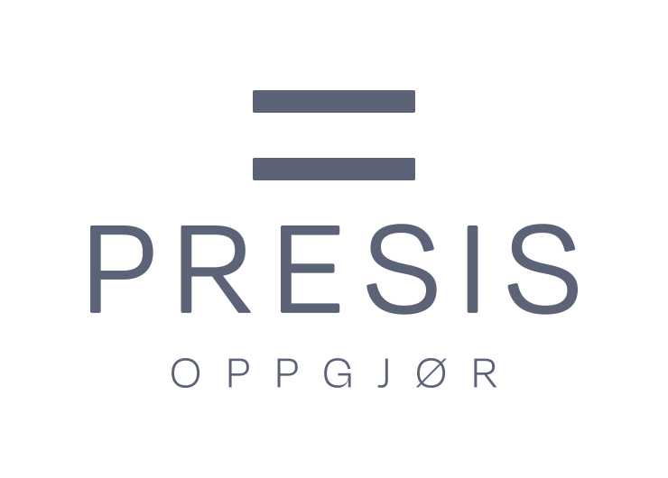

Presis Oppgjør
Identitet og nettside for et nytt, uavhengig oppgjørsforetak med konsesjon fra Finanstilsynet.

Utfordringen
Et nytt selskap med lang erfaring
Presis Oppgjør er etablert av erfarne oppgjørsmedarbeidere fra eiendomsbransjen. Selskapet håndterer det økonomiske oppgjøret i eiendomshandler på vegne av meglerforetak, og trengte navn i bruk, identitet og nettside fra bunnen av.
Kundene er eiendomsmeglere som setter bort en kritisk del av transaksjonen. Uttrykket måtte derfor signalisere kontroll og ro, og samtidig skille seg fra bankene og de store meglerkjedene.
Logo
Et oppgjør som går opp
Merket er et likhetstegn. Det står for balansen i et rettferdig oppgjør, og for de to strekene under svaret når regnestykket er ferdig.
Ordmerket er satt i Degular med vid sperring, slik at navnet får samme rolige presisjon som merket.

Logofamilie
Fire oppsett, ett system
Frisonen rundt logoen tilsvarer høyden på likhetstegnet, og er bygget inn i hver fil.





Farger
Fire farger med navn
En dempet palett bygget på tillit. Mørk bærer tyngden, Beige gir varme, Lys gir rene flater, og Blå er den eneste aksentfargen.
Kontrastregler
Seks kombinasjoner er godkjent for tekst og logo. Alle oppfyller WCAG AA i alle størrelser.
Beige på Blå (3,1:1), Blå på Mørk (2,9:1) og Beige på lyse flater (1,5:1) brukes aldri.
Typografi
Én familie, tre optiske størrelser
Degular fra OH no Type Co. Display for overskrifter, Text for brødtekst og Mono for tall, datoer og referanser.
Fotografi
Rolige interiører
Nærbilder av arbeidsplasser i dagslys og kveldslys. Ingen personer, lite dybdeskarphet og varmt treverk mot kjølig lys.
Nettside
Én side, skrevet for meglere
Nettsiden samler tilbudet til meglerforetak, selskapet, de fire ansatte og kontaktinformasjon på én side.
Kontaktskjema ble valgt bort til fordel for e-post, telefon og kart, slik at ingen opplysninger om eiendomshandler sendes via nettsiden. Siden setter heller ingen informasjonskapsler.
Like rolig på telefonen
På små skjermer samles navigasjonen i en meny og innholdet legges i én kolonne. Telefonnummer og adresse åpner anrop og kart direkte.